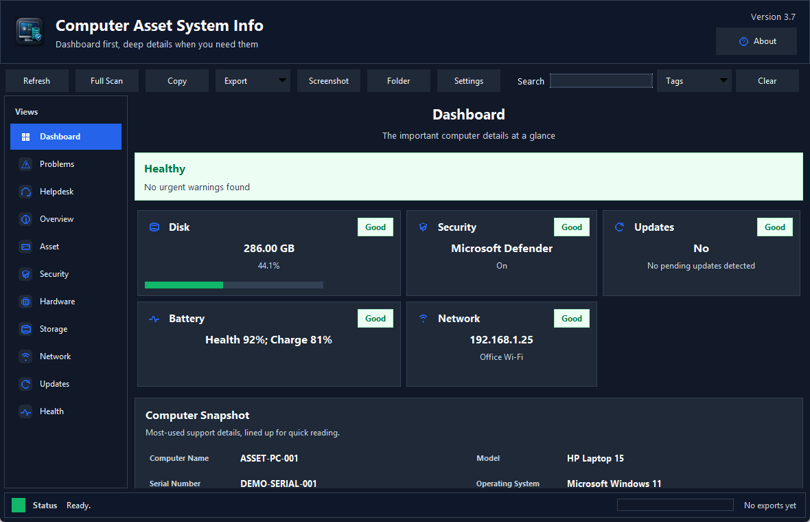
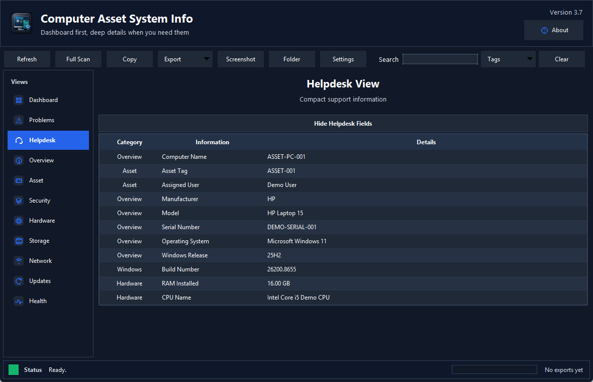
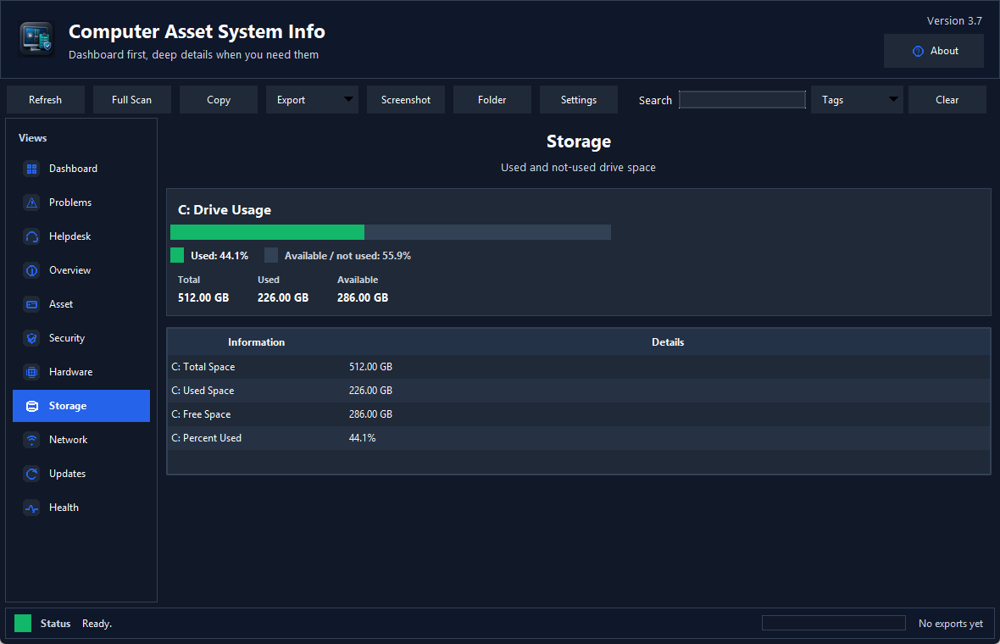
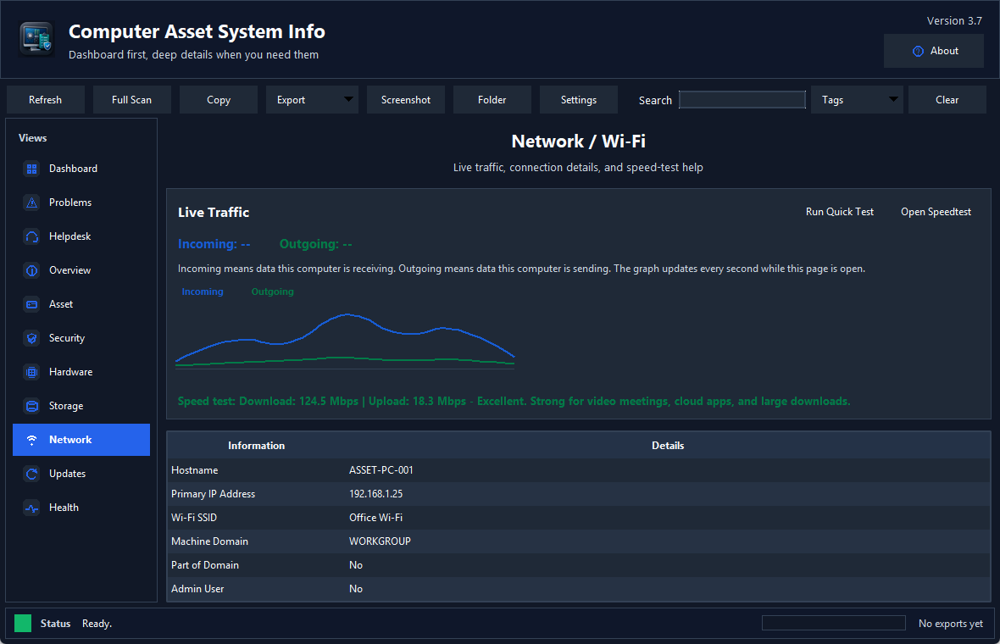

Dashboard
Shows disk, security, update, battery, and network status at a glance.
Windows asset, support, health, security, storage, and network details in one readable app.
Windows desktop utility
This app turns scattered Windows system checks into a simple dashboard with support-friendly views, exports, screenshots, live network traffic, and plain-English warnings.

Shows disk, security, update, battery, and network status at a glance.
Lines up common support fields such as computer name, model, serial, OS, RAM, CPU, and IP.
Displays used and available drive space with a visual bar and easy-to-read totals.
Shows live incoming and outgoing traffic, a quick speed test, and a Speedtest.net link.
Reviews Defender, firewall, BitLocker, TPM, Secure Boot, reboot state, and related warnings.
Creates professional text, CSV, JSON, Excel, PDF, and screenshot outputs.
Screenshots



This is an unsigned Windows executable. Windows SmartScreen or antivirus tools may show a warning because the app reads system information. Review the included Python source before use in managed environments.